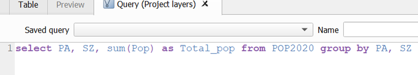
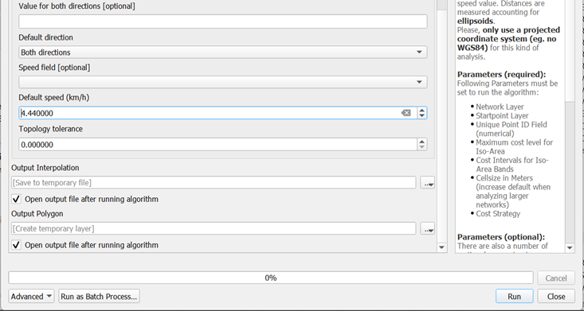
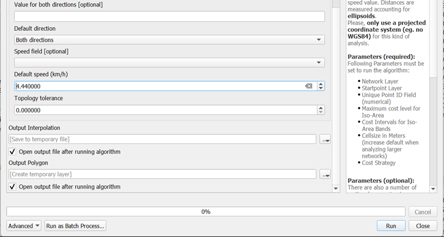
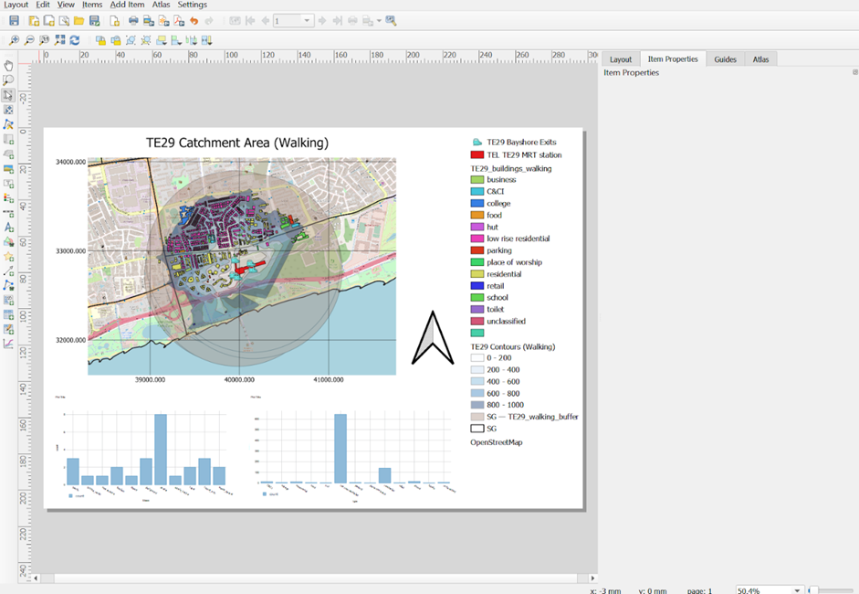
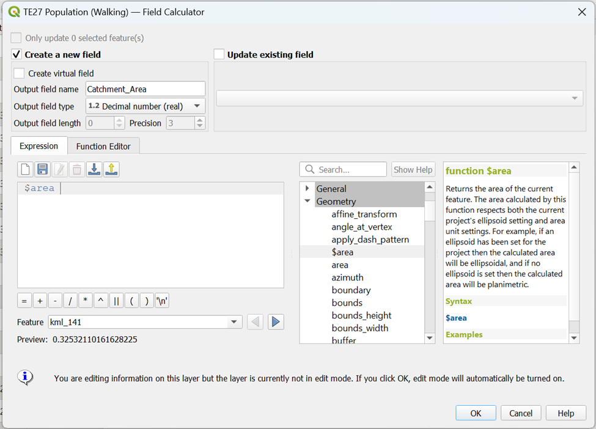
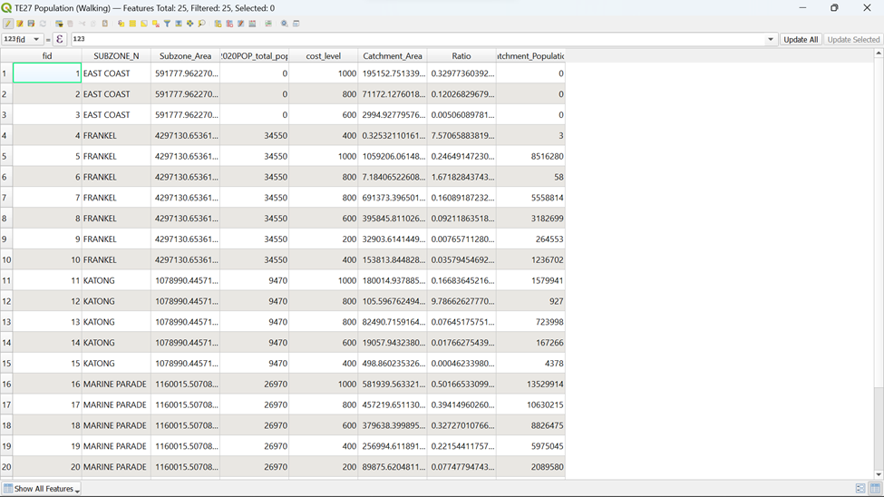

Step by Step Guide
The following is a step-by-step guide in using QGIS to complete our task.
1. Installing QNEAT3 plugin.
Before getting started, you need to install QNEAT3 plugin.
- From the menu bar, select Plugins -> Manage and Install plugins
Plugins dialog window appears.
- At the query, type QNEAT3.
Notice that QNEAT3 appears on the search output list.
Click on QNEAT3.
Click on Install Plugin button.
When the installation is completed, close the dialog box by
- click on Close button.
In order to activate the Iso-Area as Polygon/Contour algorithms you have to add the matplotlib library to your QGIS-Python installation. Depending on your operating system you may install matplotlib manually using the following options:
1.1. Windows:
Open the OSGeo4W shell that has been installed alongside QGIS.
Click Start then type OSGeo4W Shell, and hit Enter key.
At the OSGeo4W Shell, type the command below.
python-qgis -m pip install matplotlib
Press Enter key.
When the installation is completed, restart QGIS3
1.2. macOS
Open a terminal.
Type the following command:
/Library/Frameworks/Python.framework/Versions/3.x/bin/pip3.x install matplotlib
Note: Replace the version number x according to your installation) into the terminal,
Press Enter and confirm installation with yes when prompted
Restart QGIS3
After this installation, you are ready to use all QNEAT3 Algorithms.
Before using the plugin, you must at least read the concept and methods of Iso-area because it will be used in this hands-on exercise.
2. Start a new QGIS Project
Using the steps you had learned in previous hands-on exercise, start a new QGIS project. Save the project and give it a name (i.e. GIS_Project).
Reminder: Ensure that svy21 projection system is used.
3. Data Preparation
3.1 Downloading Master Plan
2019 Subzone Boundary (No Sea) layer
Download Master Plan 2019 Subzone Boundary (No Sea) Data from data.gov.sg and import it into QGIS.
In data.gov.sg portal, Master Plan 2019 Subzone Boundary (No Sea) data set is in kml and geojson formats. Import the kml format into QGIS as a GIS layer.
Save the GIS layer into GeoPackage format. Name the output layer as MP19_Subzone.
- Your screen should look like this screenshot as shown below
The original data is in wgs84. For the purpose of network analysis, the GIS data must be be in projected coordinates system (i.e. SVY21 for Singapore).
3.2 Downloading Master Plan 2019 Rail Station layer
3.2.1 Importing Master Plan 2019 Rail Station Layer
Download Rail Station Data from data.gov.sg and import it into QGIS.
In data.gov.sg portal, Master Plan 2019 Rail Station data set is in kml and geojson formats.
Import the kml format into QGIS as a GIS layer.
Your screen should look similar to the screenshot as shown below:

The original data is in wgs84. For the purpose of network analysis, the GIS data must be be in projected coordinates system (i.e. SVY21 for Singapore).
3.2.2 Extracting Thomson East Coast Line Stage 4 MRT Stations
Open the Attribute Table of master-plan-2019-rail-station-layer-geojseon by right clicking it in the layer menu
Your screen should look like the screenshot below

Click on in the menu. Your screen should look similar to the screenshot as shown below:

To extract out the following TE Stage 4 MRT stations by name:
TE22A Founder’s Memorial
TE23 Tanjong Rhu
TE24 Katong Park
TE25 Tanjong Katong
TE26 Marine Parade
TE27 Marine Terrace
TE28 Siglap
TE29 Bayshore
type in the following expression as shown in the screenshot a click on

You can see from that 8 MRT stations have been selected. Click on
 to push these 8 rows to the top. Your screen should look similar to the screenshot below:
to push these 8 rows to the top. Your screen should look similar to the screenshot below:
3.2.3 Saving Thomson East Coast Line Stage 4 MRT Stations into Geopackage format
From the main screen, select Save selected features as

Save the GIS layer into Geopackage format. Name the output layer as TEL Stage 4 MRT Stations. Your screen should look similar to the screenshot shown below:
Click OK
Your screen should look similar to the screenshot below:
3.3 Extracting TE Stage 4 MRT Stations Exits
However, TEL Stage 4 MRT Station Exits Layer is not currently available on any official websites. As a result, we are not able to download but can only extract out the exits with reference to the MRT layout pictures on LTA website.
3.3.1 Importing OSM and Opening LTA MRT Website
We will be guiding you through the extraction of TE22A Founders Memorial Exits as an example. Each MRT should have one layer with all its respective exits. Therefore, we need to create 7 more vector point layers on top of TE22A Founders Memorial Exits layer
Import OSM layer from Browser. You will need to refer to the LTA Website as you pick the exit points out. Your screen should look similar to the screenshot as shown below.

Click the LTA Website Link as given above and scroll down till you find TE22A Founders Memorial under Location of Stations. Your screen should look similar to the screenshot as shown below:
3.3.2 Creating a New Layer for TE22A Founder’s Memorial Exits
Under Layers at the top menu bar, hover your cursor over Create Layers and click on New Shapefile Layer.
Your screen should similar to the screenshot below:
Fill n the specific information as shown in the screenshot below:
- Under the Fields List, click on id and delete it by clicking
Now, we will start naming our attributes. Once every attribute is filled up, we can click on
 to create the field. We need the following attributes:
to create the field. We need the following attributes:Fid (Type: Integer, Length: 10)
MRT line (Type: String, Length: 30)
Exit (Type: String, Length: 30)

After creating all 3 variables, your screen should look similar to the screenshot below:

- Once you click on OK, you can see that TE22A Founder Memorial Exits is added to your layer Menu as a Layer as shown below:
- If you open your attribute table for TE22A Founders Memorial Exits, you will realize that the Attribute Table is empty. Your screen should look like the screenshot as shown below. We will be adding the exit points manually in the next section.
3.3.3 Adding Exit Points into Founders Memorial Exit Layer
- Open the Attribute Table of TE22A Founders Memorial Exits by right-clicking it in the layer menu
Click on
 so that editing mode can be turned on so that we can start adding the exit points in.
so that editing mode can be turned on so that we can start adding the exit points in.Once you exit the Attribute Table, click on
 in the top menu and start marking the exit points out with reference to the TE22A Founders Memorial Layout from the LTA Website.
in the top menu and start marking the exit points out with reference to the TE22A Founders Memorial Layout from the LTA Website.- Try to refer to the geographical features (eg. Roads and streets) from both the OSM layer that we previously imported, and image from the LTA website to get as accurate of an exit point as possible. For each exit points selected, fid will be in numerical order and Exits will be in alphabetical order

- Once both exits of TE22A Founders Memorial MRT Station has been marked out, click on Toggle Editing
- Save the changes made by clicking Save
- Your screen should similar to the screenshot shown below

- Let’s compare this to the TE22A Founders Memorial Exits from the LTA website:

- Let’s compare this to the TE22A Founders Memorial Exits from the LTA website
| Our GIS | LTA Website |
|---|---|
 |
You can see that the points are quite similar in both images but just bear in mind that these points that you have plotted will not be accurate to that of LTA website and my screenshots due to human error. However, you do not have to worry because the results will just vary slightly.
Now when you open your Attribute Table for TE22A Founders Memorial Exits, you can see that there will be 2 rows of data, reflecting the two exits for the MRT Station. Your screen should look similar to the screenshot as shown below

Using the steps you had learned in previous hands-on exercise, save this layer into your GeoPackage as TE22A Founders Memorial MRT Exits
3.3.4. Explain Outliers for TE26 Marine Parade
- There will be some MRT Outline Layer from Data.gov which might not tally to the MRT Outline from LTA. Let’s take TE26 Marine Parade as an example
| Our QGIS (from data.gov) | LTA Website |
|---|---|
You can see that TE26 Marine Parade Outline from Data.gov is significantly shorter than that of LTA Website. However, exit points will be flushed more together than that of LTA website and the roads near the exit points will vary significantly if we want to take TE26 Marine Parade Outline from Data.gov as reference. This will significantly affect our analysis (shortest distance taken) later.
Therefore, it would be better to take TE26 Marine Parade Outline from LTA Website as reference since it would be more accurate geographically and plot exit points out of TE26 Marine Parade MRT Outline from Data.gov. Your screen should look similar to the screenshot as shown below.

3.3.5. Extracting Exit Points as Individual Layers for the rest of TE24 MRT Stations
Using the steps you had learned earlier, create 7 MRT Exits layers for the rest of the MRT Stations and save them into your GeoPackage as
TE23 Tanjong Rhu MRT Exits – 2 Exits
TE24 Katong Park MRT Exits – 2 Exits
TE25 Tanjong Katong MRT Exits – 3 Exits
TE26 Marine Parade MRT Exits – 6 Exits
TE27 Marine Terrace MRT Exits – 6 Exits
TE28 Siglap MRT Exits – 4 Exits
TE29 Bayshore MRT Exits – 5 Exits
Your screen should look like the screenshot as shown below
3.4 Extracting and Preparing road network layer
I can’t emphasize enough the importance of a quality data preparation in GIS analysis. In this sub-section, you will use basic QGIS functions to perform the following data preparation tasks:
selecting all roads features with the study area
extracting appropriate road classes for the analysis
3.4.1. Selecting all Road network with the study area
- Import road data set of OSMinto QGIS. Your screen should look similar to the screenshot as shown below)
Under Vector from the menu bar, hover your cursor over Geoprocessing Tools and click on the Clip
Select the correct layers for Input and Output layers as shown in the screenshot below:
For Input Layer, click on . Your screen should look similar to the screenshot as shown below:
For better performance, select Do Not Filter (Better Performance) from Invalid feature filtering as shown in the screenshot below:
Using the steps you learned earlier, do the same thing fo Output Layer
Click on
 to extract out the roads in Singapore. It will take awhile for QGIS to run due to large data to process but once the process is completed, a new temporary layer Clipped should appear in your Layers Menu.
to extract out the roads in Singapore. It will take awhile for QGIS to run due to large data to process but once the process is completed, a new temporary layer Clipped should appear in your Layers Menu.Your screen should look like the screenshot as shown below:

The original data is in wgs84. For the purpose of network analysis, the road data must be in projected coordinates system (i.e. svy21 in Singapore).
3.4.2. Extracting suitable road network
Since we want to study the catchment area for walking and cycling, we do not need these following road feature classes:
Trunk
Trunk_link
Motorway
Motorway_link
Therefore, we need to remove them before saving the rest of the road feature classes into our GeoPackage.
Open the Attribute Table of Clipped
Your screen should look similar to the screenshot as shown below:

Click on
 in the menu. Your screen should look like the screenshot as shown below:
in the menu. Your screen should look like the screenshot as shown below:
To extract out the following Roads by name,
1) Motorway
2) Motorway Link
3) Trunk
4) Trunk Link
Type in the following expression as shown in the screenshot below and click on

- You can see from that 6830 rows are selected.
Click on  to push these 8 rows to the top. Your screen should look similar to the screenshot below
to push these 8 rows to the top. Your screen should look similar to the screenshot below
However, since you only want the road feature fclasses that are not these selected features, click on
 to invert the selection
to invert the selectionYou can see from
 that 219057 rows are selected.
that 219057 rows are selected.
Using the steps you had learned earlier, save these selected features as a new layer as OSM_Roads into your GeoPackage
3.5. – Extracting and Preparing Building, Points of Interest and Transport Layers
Using the steps you had learned earlier, conduct data preparation and save gis_osm_buildings_a_free_1 as OSM_Buildings, gis_osm_pois_free_1, OSM_POIs and gis_osm_transport_a_free_1 as OSM_Transport into your GeoPackage Your screen should look like the screenshot as shown below

Remove all the source data from QGIS project before continue to the next section
3.6 Downloading Singapore Residents by Planning Area / Subzone, Single Year of Age and Sex, June 2011-2020
3.6.1. Importing Singapore Residents by Planning Area / Subzone, Single Year of Age and Sex, June 2011-2020 Data into QGIS
- Download Singapore Residents by Planning Area / Subzone, Single Year of Age and Sex, June 2011-2020 Data from singstats.gov.sg and import it into QGIS.
From the Layer Panel, navigate to the path of Add Delimited Text Layer as shown in the screenshot below.
Double-click on Add Delimited Text Layer and browse for respopagesex2011to2020 by clicking
 which is at the right of File name. Your screen should look similar to the screenshot as shown below before clicking add
which is at the right of File name. Your screen should look similar to the screenshot as shown below before clicking add
You will see that respopagesex2011to2020 will be added to your Layers Window as shown below
3.6.2. Extracting 2020 Population Data
Now, we are going to extract populations belonging to year 2020 from respopagesex2011to2020 layer.
Using the steps you had learned earlier, open the Attribute Table of respopagesex2011to2020 and Select by Expression to extract our population belonging to 2020. Your screen should look like the screenshot as shown below before clicking ok

Using the steps you had learned earlier, save the selected feature as POP2020 into your GeoPackage
3.6.3. Calculating 2020 Population Data based on Subzones and Planning Areas using Data Manager
Next, we are going to derive a data table that aggregates the population figure for 2000 by planning area (i.e. PA) and planning subzone (i.e SZ) by SQL in DB Manager tool of QGIS. Before getting started, you are encouraged to read this link.
- From the menu bar, select Database -> DB Manager.

DB manager dialog window appears.
- From Providers panel, click on Virtual Layers -> Project layers -> Population --- POP2020
Your screen should look similar to the screenshot below. If necessary click on the Info tab.
 Notice that the beauty of DB Manager is that beside GeoPackage, Oracle Spatial PostGIS and SpatialLite, it is also able to work with Virtual Layers in the Layer panel.
Notice that the beauty of DB Manager is that beside GeoPackage, Oracle Spatial PostGIS and SpatialLite, it is also able to work with Virtual Layers in the Layer panel.
Next we are going to write the first SQL.
- Click on SQL Window button.

Notice that Query (Project layers) appears.
- Type the SQL below onto Query Panel.

- Your screen should look similar to the screenshot as shown below

- When you are ready, click on Execute button.
After a short while, the query results appears as shown below.
 {alt=“Graphical user interface, application” =“” Description automatically generated=“” fig-align=“center” width=“1000”}
{alt=“Graphical user interface, application” =“” Description automatically generated=“” fig-align=“center” width=“1000”}
Now you are going to add the query into Layers Panel.
- Click on the check-box in front of Load as new layer.
Notice that a sub-panel is added onto DB Manager dialog window.
- By default, the checkbox in front of Geometry column is checked. Click on the checkbox to un-check it. This is because our data table has no geometry.
- Lastly, click on Load button.
Notice that a QueryLayer has been added into Layers panel. Now, we are going to save it into Geopackage.
Using the steps you had learned earlier, save the selected feature as 2020POP into your GeoPackage
4. Delineating Network Service Areas with NEAT3 Plugin
In this section, you will learn how to delineate network service areas by using QGIS Network Analysis Toolbox (QNEAT3) plugin. We will be delineating both Walking and Cycling network service areas. We will be guiding you through the delineation of Network Service Areas within TE22A Founders Memorial as an example.
4.1 Shortest network distance method
4.1.1 Creating Walking Network Service Area using Iso-Area as Polygons (from Layer) for TE22A Founders Memorial
A more realistic approach to delineating service area is by using network distance. By and large, there are two approaches, namely shortest network distance and fastest network distance. In this sub-section, shortest network distance approach will be used. You will learn how to delineate service area using fastest distance approach in the next sub-section.
To delineate service area using shortest distance approach, Iso-Area as Polygons (from Layer) function of QNEAT3 will be used.
- From QGIS’s menu bar, select Processing -> Toolbox.
The Processing Toolbox panel appears.
- Select QNEATS3 -> Iso-Areas -> Iso-Area as Polygons (from Layer).

The Iso-Area as Polygons (From Layer) dialog window appears.
For Vector layer representing network, select Roads from the drop-down list.
For Start Points, select TE22A Founders Memorial from the drop-down list.
Notice that both GIS layers are in projected coordinates system (i.e. EPSG:3414 which is svy21).
For Unique Point ID field, select fid from the drop-down list.
For Size of Iso-Area (distance or time value), type 1000.
For Contour Interval, type 200.
For Path type to calculate, select Shortest Path (distance optimization) from the drop-down list.
For Value for Default Speed (km/h), type in 4.44
Keep the rest of the entries as default.
Your screen should look similar to the screenshot below.
 

When you are ready to run the function,
- click on the Run button.
The process involves massive computation and will take a while to complete (usually less than 5 mins in a standard 64bit machine).
When the process completed, two temporary layers namely: Output Polygon and Output Interpolation will be added onto Layers panel and display on QGIS View window.

The Output Interpolation layer is a raster layer created using triangular irregular network (TIN). On the other hand, Output Polygon layer is a polygon feature showing the 5-km service area of Bukit Batok Fire Station by road network.
The Output Polygon is popularly known as isochrone. It is originated from Greek: iso means “the same” and chronos means “time”.
Using the steps you had learned earlier, save the Output_Polygon Layer as TE22A Contours (Walking) into your GeoPackage
4.1.2. Data Cleaning of Walking Network Service Area of TE22A Founders Memorial
- To better visualize the contours for walking distance, open the Properties Table of TE22A Contours (Walking)

- Click on the Symbology tab and click onGraduated

- From value, select cost_level

From Color Ramp, click on Blues
Drop number of Classes to 4
From Mode, click on Fixed Interval

- Type 200 for Interval Size and click Classify
- Your screen should look similar to the screenshot as shown below

- From Layer Rendering, drop Opacity to 50%. Your screen should look like the screenshot as shown below before clicking OK

- With that, your walking contours can now capture the OSM layer for better analysis as it is more transparent and better categorized

4.1.3. Creating Cycling Network Service Area using Iso-Area as Polygons (from Layer) for TE22A Founders Memorial
Now, we will be doing the same steps to delineate the network service area for cycling
To delineate service area using shortest distance approach, Iso-Area as Polygons (from Layer) function of QNEAT3 will be used.
- From QGIS’s menu bar, select Processing -> Toolbox.
The Processing Toolbox panel appears.
Select QNEATS3 ->Iso-Areas -> Iso-Area as Polygons (from Layer).
The Iso-Area as Polygons (From Layer) dialog window appears.
For Vector layer representing network, select Roads from the drop-down list.
For Start Points, select TE22A Founders Memorial from the drop-down list.
Notice that both GIS layers are in projected coordinates system (i.e. EPSG:3414 which is svy21).
For Unique Point ID field, select fid from the drop-down list.
For Size of Iso-Area (distance or time value), type 1500.
- For Contour Interval, type 200.
For Path type to calculate, select Shortest Path (distance optimization) from the drop-down list.
For Value for Default Speed (km/h), type in 10
Keep the rest of the entries as default.
Your screen should look similar to the screenshot below.
When you are ready to run the function,
- click on the Run button.
The process involves massive computation and will take a while to complete (usually less than 5 mins in a standard 64bit machine).
When the process is completed, two temporary layers namely: Output Polygon and Output Interpolation will be added onto Layers panel and display on QGIS View window.

The Output Interpolation layer is a raster layer created using triangular irregular network (TIN). On the other hand, Output Polygon layer is a polygon feature showing the 5-km service area of Bukit Batok Fire Station by road network.
The Output Polygon is popularly known as isochrone. It is originated from Greek: iso means “the same” and chronos means “time”.
DIY: Using the steps you had learned earlier, save the Output_Polygon Layer as TE22A Contours (Cycling) into your GeoPackage
4.1.4. Data Cleaning of Cycling Network Service Area of TE22A Founders Memorial
To better visualize the contours for walking distance, open the Properties Table of TE22A Contours (Walking)
Click on the Symbology tab and click on Graduated

From Value, select cost_level
From Color Ramp, click on Reds

Drop number of Classes to 7
From Mode, click on Fixed Interval
Type 200 for Interval Size and click Classify

Your screen should look similar to the screenshot as shown below

From Layer Rendering, drop Opacity to 50%. Your screen should look like the screenshot as shown below before clicking OK

With that, your walking contours can now capture the OSM layer for better analysis as it is more transparent and better categorized

Using the steps you had learned earlier, save the Output_Polygon Layer as TE22A Contours (Cycling) into your GeoPackage
Using the steps you had learned earlier, generate walking and cycling network service areas for the rest of TEL Stage 4 MRT Stations into your GeoPackage
4.1.5. Creating Walking and Cycling Network Service Area for the Rest of the TEL Stage 4 MRT Stations
| MRT Station Name | Layer Cleaning | Layer Name |
|---|---|---|
| TE23 Tanjong Rhu |  |
TE23 Contours (Walking) |
| TE23 Tanjong Rhu |  |
TE23 Contours (Cycling) |
| TE24 Katong Park | TE24 Contours (Walking) | |
| TE24 Katong Park | TE24 Contours (Cycling) | |
| TE25 Tanjong Katong |  |
TE25 Contours (Walking) |
| TE25 Tanjong Katong | TE25 Contours (Cycling) | |
| TE26 Marine Parade |  |
TE26 Contours (Walking) |
| TE26 Marine Parade | TE26 Contours (Cycling) | |
| TE27 Marine Terrace | TE27 Contours (Walking) | |
| TE27 Marine Terrace |  |
TE27 Contours (Cycling) |
| TE28 Siglap |  |
TE28 Contours (Walking) |
| TE28 Siglap |  |
TE28 Contours (Cycling) |
| TE29 Bayshore |  |
TE29 Contours (Walking) |
| TE29 Bayshore | TE29 Contours (Cycling) |
5. Extracting Buildings within Catchment Areas for Amenities Analysis for TE29 Bayshore
5.1. Extracting Buildings within Catchment Areas for Amenities Analysis for TE29 Bayshore
To identify the buildings that we want, we must first open the Iso-Area layer. This way, we can see what are the buildings that fall within the catchment area that requires us to recategorize. We will be guiding you through the extraction of amenities that fall within TE29 Bayshore Contours (Walking) as an example.
5.1.1. Classifying Buildings
In the Layers panel, ensure that TE29 Bayshore Contours (Walking) layer is on
Open the Layer Properties ofOSM_Building.
Click on Symbology tab
At the top of the Symbology dialog, change Type to Categorized.
For Value, select Type
Click Classify. Your screen should look similar to the screenshot as shown below.
Click OK and your screen should look similar to the screenshot as shown below

5.1.2. Identifying Buildings that are NULL within the Catchment Area
Upon closer inspection on Attribute Table for the OSM_Buildings layer, we find that many have null Type values. Since the Type is the property that will be able to differentiate the nature of the buildings, we will need to fix this. Therefore, we need to perform recategorizing of the building types.
In the Layers panel, right click on OSM_Buildings and open its Attributes Table.
Use Select Features by Area or Select Feature(s) and click on one of the buildings in red in the screenshot as shown below. (Your buildings may have a different color combination)
- We see that the Type is null for these buildings.
Now, we will need to use external software, Google Maps or Maps, to identify our building type with existing visual data and change it in our Attributes Table accordingly.
- Click on the Toggle Editing Mode icon in the Attributes Table to allow for editing function.
5.1.3 Data Cleaning for NULL Buildings within the Catchment Area
Below shows a table of how and why we recategorize NULL buildings into the correct building types that we use in our analysis.


After editing, click on Toggle Editing Mode icon. A pop-up window will appear as shown below
- Click on Save when the prompt appears.
5.1.4 Extracting all Buildings in Catchment Area
Since we want to analyze the types of buildings that fall under TE29 Bayshore Contours (Walking), we need to extract them out.
- In the Attributes Toolbar, click on Select by Location
The Select by Location dialog windows appear.
From Select features from, select OSM_Buildings
Tick the checkbox in front of Intersect under the Where he Features
From By Comparing to the Features from, select TE29 Bayshore Contours (Walking). Your screen should look similar to the screenshot below.
- Click Run. Your screen should look similar to the screenshot as shown below.
However, we see that some buildings within the catchment area are not selected because the contour does not cover those parts. However, all buildings directly beside would be reachable within the Iso-Area of 1 km for walking and 1.5 km for cycling. Hence, we need to make sure that these buildings are also selected.
In the Attributes Toolbar, click on Select Feature(s)
In your keyboard, press on the Shift key as you click on the additional buildings that are directly beside the Catchment Areas on your QGIS.
Now, we need to save this to our GeoPackage.
Using the steps you had learned earlier, save these selected features as a new layer as TE29_ buildings_walking into your GeoPackage. Your screen should look similar to the screenshot as show below before clicking OK
- From your Layers Menu, you can see a new layer TE29_ buildings_walking is created
However, since the buildings are now uncategorized, you must categorize them again. Since the null building types are updated in TE29_ buildings_walking, no further data cleaning is required, and categorizing is enough.
Using the steps you had learned earlier, categorize TE29_ buildings_walking based on their fclass under Symbology in Layer Properties
Using the steps you had learned earlier, repeat all the steps in section 1.6 for all walking and building contours for all TEL 4 Stage 4 MRT Stations into your GeoPackage
5.2 Extracting Points of Interests within Catchment Areas for Amenities Analysis for TE29 Bayshore
We also want to analyze the types of POIs that will be affected by the TEL Stage 4 MRT stations. Hence, we also need to get the POIs that fall within the catchment area for both walking and cycling. The steps to do so are also the same as for Buildings.
5.2.1. Extracting all Points of Interest in Catchment Area
Using the steps you had learned earlier, extract all Points of Interests that falls under TE29 Bayshore Contours (Walking) and save these selected features as a new layer as TE29_pois_walking into your GeoPackage. Your screen should look similar to the screenshot as shown below.
Using the steps you had learned earlier, categorize TE29_ pois_walking based on their values under Symbology in Layer Properties. Your screen should look similar to the screenshot as shown below.
Using the steps you had learned earlier, repeat all the steps in section 1.6.2 for all walking and building contours for all TEL 4 Stage 4 MRT Stations into your GeoPackage
6. Creating Buffers for Catchment Areas for Amenities Analysis
An ideal catchment area would be buffer generated based on the correct distance (1km for Walking and 1.5km for Cycling). We will compare Iso-Area and buffer to see their differences. From here, we can see if a better road network is required for people to walk or cycle more efficiently. We will be guiding you through the creation of buffers for TE29 Bayshore Contours (Walking) as an example.
6.1. Generating Buffer
Under Vector from Menu Toolbar, hover your cursor over Geoprocessing Tools, and click on the Buffer
From Input layer, select TE29 Bayshore Contours (Walking)
From Distance, change the values depending on the contour you are doing
If you are doing walking contour, change the value to 1000
If you are doing cycling contour, change the value to 1500
- From Segments, type 100
Your screen should look similar to the screenshot as shown below.
- Click Run
You can see that a temporary Buffered layer is created from your Layers panel
Your screen should look similar to the screenshot as shown below.
Using the steps you had learned earlier, save these selected features as a new layer as TE29_ walking_buffer into your GeoPackage. Your screen should look similar to the screenshot as show below before clicking OK
6.1.2. Data Cleaning of Buffer
To allow the other building layers to be seen, we can make the buffer translucent like the contours.
Using the steps you had learned earlier, open Symbology tab of TE29_ walking_buffer by opening its Layer Properties
From Layer Rendering, drop Opacity to 40%. Your screen should look like the screenshot as shown below before clicking OK
- Click OK. Your screen should look similar to the screenshot as shown below.
We can reorder and place TE29_ walking_buffer below TE29 Bayshore Contours (Walking), TE29_buildings_walking and TE29_pois_walking in the Layers panel to not block the contour and buildings layer for clear visibility.
Using the steps you had learned earlier, create and save the buffer layers for all TEL 4 Stage 4 MRT Stations into your GeoPackage
7. Creating Layouts for Amenities Analysis
To analyze what are the buildings and POIs within the catchment area that are affected by the MRT stations, other than categorizing them into their building types and POI class, we want to get the count of these categories. This way, we can get deeper insights as to who exactly are those that are affected by the MRT, and how many of these people are affected. We will do so by making use of the bar graph plot functionality in QGIS to plot the count of these amenities. We will be guiding you through the creation of TE29 Bayshore Contours (Walking) amenities layout as an example.
7.1. Getting Counts for Both Buildings and POIs
Using the steps that you learnt earlier, open DB Manager and select either TE29_buildings_walking or TE29_pois_walking under Project Layers.
Click on the SQL Window icon .
In the query, write these SQL codes depending on which layer you start first:
TE29_buildings_walking
TE29_pois_walking
- Click Execute
After inspecting the query loaded and making sure that it is correct, whereby there is a type and count column, you can proceed to save this query you created. The query loaded should similar to the screenshot as shown below.
Using the steps that you learnt earlier, load both counts into new layers and save them as new layers TE29_FINAL_BUILDINGS_WALKING and TE29_FINAL_POIS_WALKING into your GeoPackage
Repeat this process for all POI and building layers for both Walking and Cycling contours of all TEL Stage 4 MRT stations
7.2. Displaying Data in a New Layout for Analysis
7.2.1. Starting a new QGIS print layout
From the menu bar, select Project -> New Print Layout.

Provide an appropriate title. An example would be:
Click on OK button when it is ready.
A new Print Layout dialog window appears.
7.2.2. Adding a map layer
From Menu bar, select Add Item -> Add Map.
Once the Add Map mode is active, hold the left mouse button and drag a rectangle where you want to insert the map like shown below.
Release your left finger from the left mouse button.
Your screen should look similar to the screenshot below.
Notice that a new item called Map 1 has been added on the Items Panel.
7.2.3. Changing the size of the map
Under Item Properties, go to Position and Size Sub-Panel.
Change the Width to 170
Change the Height to 129
The sub-panel should look like this.
7.2.4. Changing the main properties
To prevent the view on the layout changes when we turn on/off some layers or change their styles, it is important for us to lock the layers and styles.
Scroll the Main Properties Panel down until Layers appears.
Click on the check box in front of Lock layers and Lock styles for layers.
7.2.5. Adding Grid Reference
Next, we will add grid reference for the map.
From Items Properties Panel, scroll down until Grids Sub-Panel appears.
Click on
A new grid frame called Grid 1 is added as shown below.
Next, we are going to add a 1000m-by-1000m grid on the layout.
Click on the Modify Grid button.
Scroll down until Appearance Sub-Panel appears.
For X, enter 1000.
For Y, enter 1000.
Next, we will change the line color to gray.
- Click on the drop-down list behind Line style.
The color panel appears.
- Choose one of the light gray colors from the panel.
Notice that a light gray grid frame is added to the layout.
Next, we are going to turn on the coordinates.
Scroll down the Map Grid Properties paneluntil Draw Coordinates sub-panel appears.
Click on the checkbox in front of Draw Coordinates.
Your screen should look similar to the screenshot below.
By default, the grid reference appears on the four axis of the map layout. We are going to turn off the grid reference on the right and bottom of the layout.
From the Right sub-panel, click on the drop-down list and select Disable.
From the Top sub-panel, click on the drop-down list and select Disable.
The map layout should look similar to the screenshot below.
7.2.6. Adding Bar Graph for Buildings
This will allow us to visualize the count of the building type easily for our analysis.
Click on Add Item, then click on Add Plot Item.
Click and drag your mouse over the project layer again to create the plot item.
On the right now, under click on the plot type that is given by default, then click Setup Selected Plot.
Under Plot Properties, make a few changes:
Choose Bar Plot for Plot type
For Layer, select TE29_FINAL_BUILDINGS_WALKING
From Linked map, select Map 1
For X field, choose type
For Y field, choose count
Your screen should look similar to the screenshot as shown below before you click Update Plot:
- Now, the bar graph will appear in your projection layer. Your screen should look similar to the screenshot as shown below.
7.2.7. Adding Bar Graph for POIs
DIY: Using the steps you had learned earlier, create a bar chart for TE29_FINAL_POIS_WALKING by following the steps in section 1.8.2.6.
However, this time, there are a few differences to make to Plot Properties
Under Plot Properties,
From Layer, select TE29_FINAL_POIS_WALKING
For X field, choose fclass
Now your projection layer should look similar to the screenshot as shown below.
7.2.8. Adding Map Legend
Now, we are going to add map legend onto the layout.
- From the Menu Bar, select Add Item -> Add Legend.
The map legend will be added onto the layout.
Since this layout should focus on the buildings and POIs in the catchment area alone, we are going to remove other unrelated items from the legend.
- Heading back to your print layout window, from Legend Items Sub-Panel, click on the checkbox in front of Only Show Items Inside Linked Map.
Your screen should look similar to the screenshot as shown below.
7.2.9. Adding Title
- From the Menu Bar, select Add Item -> Add Label.
- At the Main Properties, type the following text.
Use an appropriate text based on the catchment area you are doing.
Next, we are going to change it to a bigger font size.
- From the Appearance sub-panel, click on the drop-down list behind Font.
The font size window appears.
- Change the font size to 20.
Next, change the title horizontal alignment to centre and vertical alignment to middle.
For Horizontal alignment, click on the radio button in front of Center.
For Vertical alignment, click on the radio button in front of Middle.
Your layout screen should look similar to the screenshot as shown below.
7.2.10. Adding North Arrow
- From the Menu Bar, select Add Item -> Add North Arrow
Scroll to the Position and Size sub-panel
Change the Width to 36
Change the Height to 30

Your layout should look similar to the screenshot as shown below.

7.2.11. Adding Scale
- From the menu bar, select Add Item -> Add Scale Bar
Now let us change the scale distance
- Under Segments sub-panel, change the Fixed Width to 1000 units.
Your layout should look similar to the screenshot as shown below.
7.2.12. Saving print layout
In QGIS, the composed map layout can be exported into three formats, namely: Image, SVG and PDF.
- To export, click on File from the menu bar and select one under the format list below.
Using the steps you had learned in previous hands-on exercise, create Layouts for the rest of the Walking and Cycling Contours for all of TEL Stage 4 MRT Stations for Amenities Analysis
8. Creating Choropleth Maps for Catchment Population for Population Analysis
8.1. Creating Common Attribute
Before you merge 2020POP and MP19_Subzone together, you need to have a common attribute. By opening Attribute Table of 2020POP, you will see the following columns
By opening Attribute Table of MP19_Subzone, you will see the following columns as well
However, you see that it is quite messy, so you need to filter out columns that do not provide much information to you.
- Click on Organize Columns and uncheck these following columns before clicking OK
You will see that your Attribute Table for MP19_Subzone is so much cleaner now
If you look at both Attribute Tables carefully, you will realize that the column 'SZ' in 2020POP is in lower case of column 'SUBZONE_N' in MP19_Subzone. Therefore, we need to use subzone names to merge both 2020POP and MP19_Subzone together.
Go to 2020POP's Attribute Table and select Open Field Calculator at the top. A pop-up window will appear as shown below
As we aim to capitalize the string data in 'SZ' column, fill in the Output Field Name and the Output Field Type as shown below.

Type the following code as shown below
The preview will show you what the new string will be in the new column 'SUBZONE'
- Click OK and you will see that a new column 'SUBZONE' is added to your 2020POP's Attribute Table
However, the table will be in edit format, so you need to save the changes that you had made.
- Click on (top left of your screen). A pop-up will appear as shown below and click Save

8.2. Performing Relational Join Between MP19_Subzone and 2020POP layers
Now you are ready to perform relational join between the MP19_Subzone layer and the 2020POP layer. To join the Attribute Table of a geospatial data and an aspatial Attribute Table, we need to identify the common key or popularly known as Unique Identifier between these two data sets with we had prepared earlier. In this case, it is the Subzone Names ('SUBZONE' and 'SUBZONE_N')
You are ready to join both tables now.
- From the Layers panel, double-click on MP19_Subzone layer.
The Layer Properties dialog window appears.
- From the Tab menu, click on the Joins tab.
Your screen should look similar to the screenshot below.
- Click on Add New Join icon
The Add Vector Join dialog window appears.
For Join Layer, select 2020POP from the drop-down list.
For Join field, select SUBZONE from the drop-down list.
For Target field, select SUBZONE_N from the drop-down list.
Click on OK button to perform the relational join.
You will return to the Layer Properties dialog window.
Notice that a relational joined between 2020POP Attribute Table and the Attribute Table of MP19_Subzone has been created.
- At the Layer Properties dialog window, click on the OK button.
Strange, it seems that nothing had happened!
- At the Layers panel, right click on MP19_Subzone layer and select open Attribute Table from the context menu.
You will notice that the table now contains additional fields from 2020POP attribute layer.
Remember that this joint is temporary. It is not part of the Attribute Table of MP19_Subzone layer but is just linked dynamically to the 2020POP layer. If you want to permanently join the attributes, you must save it as a new layer.
- To double check if both attribute tables are joined properly, click on
If the rows are not joined properly, values belonging to 2020POP in Attribute Table of MP19_Subzone will reflect as NULL. Therefore, we will have to find NULL values by using the following expression as shown below
Type the following code as shown in the screenshot below
Click on Select Features
You can tell that from that 0 row is selected which means that both attributes' tables are joined properly
8.3. Creating Choropleth Map for Subzone Population
In this section, you will learn how to create a choropleth map showing the distribution of 2020 population in 2020POP by MP19_Subzone.
You are ready to prepare the choropleth now.
- From the Layers panel, double-click on MP19_Subzone layer.
The Layer Properties dialog window appears.
Click on Symbology tab.
At Symbol selection drop-down list, select Graduated from the drop-down list.
For Value, select 2020POP_total_pop from the drop-down list.
For Classes, keep it as 5.
For Color Ramp, choose Blues or any colour of your choice from the drop-down list.
For Mode, choose Natural Breaks (Jenks) from the drop-down list.
Click on Classify button.
Your screen should look similar to the figure below.
You can review the statistical distribution of the classification in histogram.
Click on the Histogram tab.
Click on Load values button.
Your screen should look similar to the figure below.
This feature is very useful for casual data analysts because the histogram helps us to understand the differences of each classification method.
Click on Classes tab.
Click on Apply button.
Click on the OK button.
Your screen should look similar to the figure below.
8.4. Calculating Catchment Population
We will be guiding you through the calculation of Catchment Population for TE27 Marine Terrace Contours (Walking) as an example.
8.4.1. Creating a 'Subzone_Area' column for MP19_Subzone
To calculate the Catchment Population, we need to find out the ratio of Subzone Catchment Area to its Subzone Area for all subzones that falls within each contour line first.
DIY: Using the steps that you learned earlier, open Attribute Table of MP19_Subzone and click on Open Field Calculator. Your screen should look similar to the screenshot as shown below
We want to create a new column 'Subzone_Area' for each subzone area.
- Type the following code as shown in the screenshot below before clicking OK
You will see that a new column 'Subzone_Area' is now created in the Attribute Table of MP19_Subzone
Using the steps that you learnt earlier, save the changes made and filter out unnecessary columns in the Attribute Table of MP19_Subzone. Your screen should look similar to the screenshot as shown below.
8.4.2. Extracting Polygons
From Vector on the Menu, hover your cursor over Geoprocessing Tools and click on Union
Your screen should look similar to the screenshot as shown below
Select the correct layers for your Input and Overlay layers as shown in the screenshot below
With the steps that you learnt earlier, for better performance, select Do Not Filter (Better Performance) from under Invalid feature filtering for both input and overlap layers before clicking Run. Your screen should look like the screenshot as shown below.
You can see that a temporary layer Union is created in your layer menu.
Let's analyze the Attribute Table of this Temporary layer Union.
DIY: With the steps that you learnt earlier, open the Attribute Table of Union. Your screen should look similar to the screenshot as shown below
You can see that it is very messy, thus filtering of column is required.
With the steps that you learnt earlier, filter out unnecessary columns and leave those columns checked as shown in the screenshot below. Your screen should look similar to the screenshot as shown below.
Since you only need the rows for those in the catchment polygon layers, you need to do further data filtering.
Using the steps that you learnt earlier, click on Select by Expression and type in the following code as shown below before clicking Select Features
You can see from that 25 rows are selected based on the condition that we had set. Now you want to save these 25 rows as TE27 Population (Walking) into your GeoPackage. However, you need to ensure that these 25 rows have a unique fid first.
Using the steps that you learnt earlier, manually change all the fid of the selected rows starting from 1 to 25 and save it. Your screen should look similar to the screenshot as shown below.
Once that is done, you can now save the selected feature into your GeoPackage now
Using the steps that you learnt earlier, save the selected features as a layer as TE27 Population (Walking) into your GeoPackage
You can see that a permanent layer called TE27 Population (Walking) is now created in your Layer menu as shown below.
8.4.3. Creating a 'Catchment_ Subzone_Area' Column
To calculate the Catchment Subzone Area, we need to open the Attribute Table for TE27 Population (Walking).
Using the steps that you learnt earlier, open the Attribute Table for TE27 Population (Walking). Your screen should look similar to the screenshot as shown below.
You can still see that the Attribute Table contains a lot of unnecessary columns, thus we need to conduct filtering
Using the steps that you learnt earlier, filter out unnecessary columns and leave those columns as shown below. Your screen should look similar to the screenshot as shown below
Now we need to find out the area of the Catchment Subzone Area using Open Field Calculator
Using the steps that you learnt earlier, create a new column for Catchment_Area using the following code as shown in the screenshot below before clicking OK

Your Attribute Table should reflect the additional 'Catchment_Area' created as shown in the screenshot below.
Using the steps that you learnt earlier, save the changes made to the Attribute Table of TE27 Population (Walking)
8.4.4. Creating a 'Ratio' Column for TE27 Population (Walking)
Assuming that Population is equally distributed across the subzone area, you need to calculate the percentage of Catchment Area to respective Subzone Area. Since now you have both Catchment Subzone Area and Subzone Area, this is now possible.
Using the steps that you learnt earlier, create a new column 'Ratio' using the Open Field Calculator in the Attribute Table and type in the following code as shown below before clicking OK
Your Attribute Table should reflect the additional 'Ratio' created as shown in the screenshot below.
Using the steps that you learnt earlier, save the changes made to the Attribute Table of TE27 Population (Walking)
8.4.5. Creating a 'Catchment_Population' Column
Since now we have the ratio, we will calculate Catchment Population by multiplying the Subzone Population and respective ratio per subzone and contour. The assumption made above still holds.
Using the steps that you learnt earlier, create a new column 'Catchment_Population' using the Open Field Calculator in the Attribute Table and type in the following code as shown below before clicking OK
Your Attribute Table should reflect the additional 'Catchment_Population' created as shown in the screenshot below.

Using the steps that you learnt earlier, save the changes made to the Attribute Table of TE27 Population (Walking)
8.5. Creating a Choropleth Map for Catchment Population
To better present the data, it would be better to represent the Catchment Population in the form of a Choropleth Map with OSM and MP19_Subzone Layers
8.5.1. Creating a Choropleth Map for Catchment Population
Using the steps that you learnt earlier, open the Layer Properties for TE27 Population (Walking) and click on the Symbology tab.
Our value for Catchment Population Choropleth Map would be 'Catchment_Population'. But wait! You can see from the screenshot below that this column is not present anywhere in the list of values as shown in the screenshot below.
Is there any way to overcome this? Of course!
Click on the on the right side of Symbol. A pop-up should appear as shown in the screenshot below.
Type in the following code as shown below before clicking OK
Now you can see that 'Catchment_Population' is reflected as the value as shown in the screenshot below.
Using the steps that you learnt earlier, generate a Choropleth Map for Catchment Population. Your Symbology screen should look similar to the screenshot as shown below before clicking OK
Now, you can see that a Choropleth Map is generated based on TE27 Contours (Walking)
8.5.1. Making a Transparent Fill for MP19_Subzone Layer
However, this isn't visibly pleasing. If we can show the division of MP19_Subzone and the OSM layer, it can provide us with more information for better analysis.
Using the steps that you learnt earlier, open the Symbology tab for MP19_Subzone layer.
Click on Simple Fill under Fill. Your screen should look similar to the screenshot as shown below.
Select Transparent Fill under Fill color
Increase Stroke Width to 1 before clicking OK
Now you can see from your main screen,
Each Subzone is divided distinctly
Each part of the Contour that falls in their respective Subzone
Nearby amenities (Transport, POIs and Buildings) within the Contours
Using the steps that you learnt earlier, generate Choropleth Maps for both Walking and Cycling Contours for the rest of the TEL Stage 4 MRT Stations.
9. Creating Layouts for Population Analysis
9.1. Displaying Data in a New Layout for Analysis
Try to create a layout for TE29 Bayshore Contours (Walking) as an example.
9.1.1. Starting a new QGIS print layout
Using the steps that you learnt earlier, start a new print layout and title it as TE29 Population (Walking).
9.1.2. Adding a map layer
Using the steps that you learnt earlier, add a map to TE29 Population (Walking) Layout.
9.1.3. Adding Grid Reference
Using the steps that you learnt earlier, create a grid reference to TE29 Population (Walking) Layout.
9.1.4. Adding Map Legend
Using the steps that you learnt earlier, add a map legend to show the existing features of TE29 Population (Walking) Layout.
9.1.5. Adding Title
Using the steps that you learnt earlier, add a title and name it TE29 Catchment Population Distribution (Walking) to show the existing features of TE29 Population (Walking) Layout.
9.1.6. Adding North Arrow
Using the steps that you learnt earlier, add a north arrow to TE29 Population (Walking) Layout.
9.1.7. Adding Scale
Using the steps that you learnt earlier, add a scale to TE29 Population (Walking) Layout.
9.1.8. Saving print layout
Using the steps that you learnt earlier, save TE29 Population (Walking) Layout to your laptop. Your layout should look similar to the screenshot as shown below.